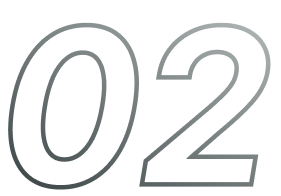

やるかやらないか 決めるのは自分だ マイナビ クリエイター
現役 WEBディレクターの
「 よくあるお悩み解決します！ 」
“ 今の業務以外に何が出来るのか、客観的なプロの意見が聞きたい ”
同じ会社で長く働いていると、担当業務以外のことを知る機会がなく、自分が他に何の業務に応募できるのかわからなくなってしまうもの・・
Web職・ゲーム業界の転職専門のキャリアアドバイザーがあなたの転職をサポート！
マイナビクリエイターは、数ある転職支援サービスの中でも珍しい、「Web職・ゲーム業界の転職」を専門にコンサルティングしている専任のキャリアアドバイザーが個別カウンセリングを行います。皆さまの希望や適性に合わせながら、転職活動全体をサポートさせていただきますので、安心してお任せください。
Career Adviser A.Tagashira
とりあえず相談でも大丈夫です！
充実の個別サポート
転職に必要な基本的なことから、クリエイターの皆さまだからこそ悩む専門的なことまで、幅広くサポートしています。

“ 自分では知り得ない、新たな挑戦の場を発掘をしたい ”
近年、SNSやWeb検索で調べられる情報は増えましたが、エージェントだからこそ持っている非公開求人や業界情報はやはり見逃せないもの。効率よく情報を獲るのも、忙しい方には大切です。
Web職・ゲーム業界の求人紹介は量より質！
あなただからこそ合う求人を厳選紹介
人の性格が一人一人違うように、転職方法も一人一人違って当然！
メーカー、広告代理店、制作会社、メディア事業、サービス事業、コンサルティング事業、EC運営企業など、それぞれの業種で求められるクリエイターの特性を把握している私たちだからこそ、異業種への転職などのレベルの高いマッチングを実現することができます。
Career Adviser A.T.Matsumoto
業界トップクラスの保有求人数
私たちマイナビクリエイターは、Web職・ゲーム業界の求人に特化しています。Web職・ゲーム業界の求人情報は、業界でもトップクラスです。
先に「厳選紹介」という言葉を使いましたが、それは、豊富な求人を保有しているからこそ、選択の範囲が広がり、実現できることなのです。多くのクリエイターの皆さまが、同じWeb職・ゲーム業界に限らず、前職とは異なる業界や職域、職位での転職に成功しています。
先に「厳選紹介」という言葉を使いましたが、それは、豊富な求人を保有しているからこそ、選択の範囲が広がり、実現できることなのです。多くのクリエイターの皆さまが、同じWeb職・ゲーム業界に限らず、前職とは異なる業界や職域、職位での転職に成功しています。
“ 現状、業界での自分の市場価値を知りたい ”
社内評価だけでは、自分のレベルが分かりずらいもの。業界で埋もれないためにも、絶えず、自分の力試しをすることをおすすめします。
一生使える！WEBディレクターのポートフォリオ活用術
WEBディレクターにポートフォリオは不要だと思っていませんか？
WEBディレクターには、過去に携わったプロジェクトも関わり方も、多岐に渡るという方が多くいます。「自分はこれをずっとやってきた」という軸となるスキルがないことに、不安に感じるという声も多数あります。
Career Adviser C.Tanaka
ポートフォリオを作るのは、デザイン職種だけではありません！
過去のプロジェクトにどういった思いで取り組み、何を表現しようとしたのか、ひとつひとつ掘り下げていくことが、転職活動ではとても大事になってきます。これまで携わったプロジェクトをアピールする際にもご活用してください。
ポートフォリオサービス
MATCHBOXの提供
履歴書・職務経歴書
ポートフォリオが簡単に作れる！
MATCHBOXは、クリエイター集団「PARTY」と共同開発したマイナビクリエイターオリジナルのポートフォリオサービスです。
ポートフォリオができたら、オファー機能で企業と出会えるチャンスも。
ポートフォリオや職務経歴書を作成し、「オファー機能」に申し込むと、あなたの作品やキャリアを見て気になった企業から面接のオファーを受け取ることができます。さらに、キャリアアドバイザーがサポートしますので、安心して転職を進めることができます。
転職後も、MATCHBOXのオファー機能を活用して、自分のレベルを絶えず見ておくのもおすすめです。
転職活動の流れ
-
無料お申し込み
-
お電話で登録会の実施
-
個別カウンセリング
-
求人に応募
-
各求人の選考・面接へ
-

内定・入社
マイナビクリエイターの
取り組み
Web業界で活躍する方々を、ゲストに招いたセミナーの開催
Web業界の最前線で働くロールモデルの方々からキャリアを学ぶ「Web業界進化論 実践講座」や、豪華プロデューサー・ディレクター陣によるトークセッションを過去多数開催！
Web業界進化論 実践講座
定期開催中！
新着イベント
マイナビクリエイターでは。クリエイティブ業界に特化したイベントを多数開催。 Webの最新技術や制作テクニックを学び、スキルアップを目指してはいかがでしょうか。
新着情報はこちらから過去イベント